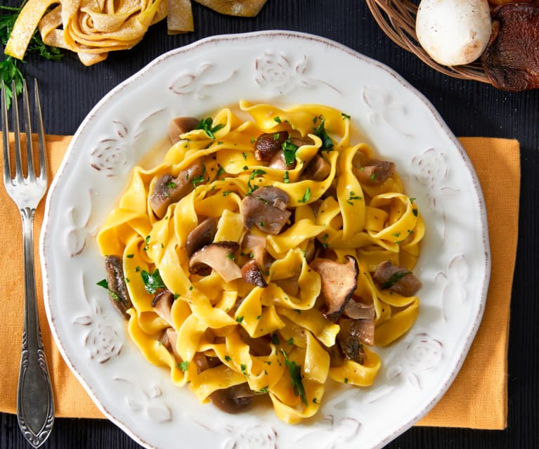

Tagliatelle ai funghi is a flavorful Italian dish consisting of fresh tagliatelle pasta paired with meaty mushrooms such as porcini (the most common choice), portobello, or chanterelles (finferli in Italian). The dish is often additionally flavored with shallots, black pepper, salt, chopped parsley, and white wine.
Meal prep time : 30 minutes
Servings : 4